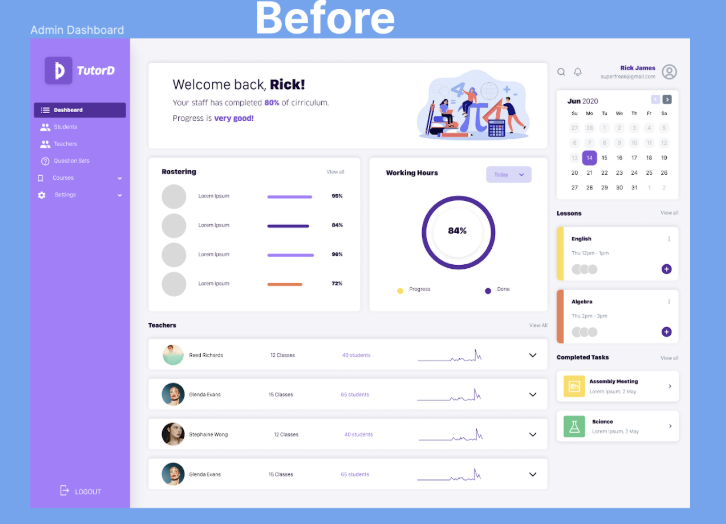
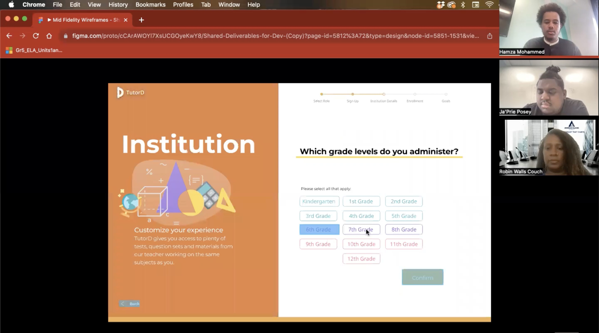
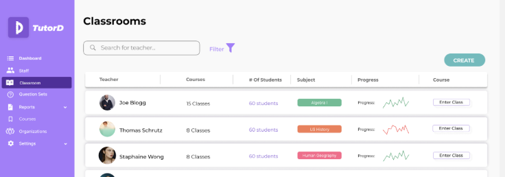
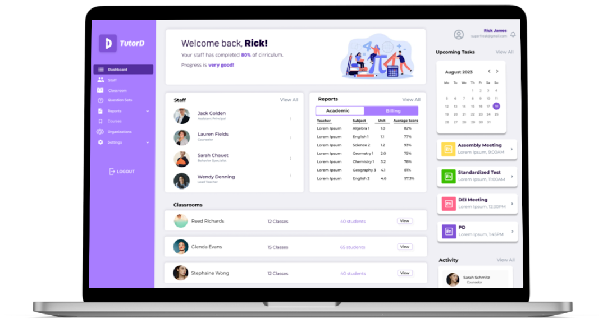

TutorD Education Platform: Designing the Admin Experience for K–12 STEM Tutoring
I was tasked with designing TutorD’s admin experience so school admins could roster people, read classrooms, and act on reports without leaving the page they were on.
01 - Assignment
TutorD is building thoughtful, adaptive STEM tutoring for K–12 students in urban settings. My team and I were asked to design the admin side. That meant the people who roster classrooms and have to prove the product is working.
The client handed us a basic dashboard, user stories, and a teacher onboarding flow. The job was to turn that into one admin experience that could carry three jobs without sending someone hunting across pages.
Rostering
Add and remove admins, teachers, and students without breaking the classroom they belong to.
Classrooms
Put enough progress in the row that an admin does not have to click in to know how a class is doing.
Reports
Surface billing, engagement, and scores in a form an admin could actually show someone.
02 - Uncovering the Problem
The stakeholder interview was less about features and more about alignment. We needed to understand what the admin already had to build from and where the experience still needed structure.


What we inherited was a starting point, not a destination. The dashboard could hold people. It could not tell an admin, at a glance, whether a classroom was moving.
03 - Prioritizing Findings
We could not get into competitor admin pages, so the competitive audit looked at the surfaces we could actually open. It also looked at jobs that overlapped with TutorD.
Schoology
Signs you into activity, not a blank hub. That pushed us to treat the classroom list as the place work starts.
Kahoot
Makes student performance the point of reports, not a buried export. We used that when we ranked what a report had to answer.
Quizlet
Shows progress as something you can scan, then open. That became the model for the classroom row.
We did not freeze a mid-fidelity and test it four times. After each of the four usability sessions we synthesized, changed the prototype, and tested the change. The alternative was one locked file. That would have left the same empty-row pain in place.

Student progress
Participants wanted a progression status for each student once they were looking at a classroom.
Unit statistics
They wanted quarter-to-quarter and year-to-year comparison, not a single score sitting alone.
Classroom year
They wanted the classroom page to show the current school year without a separate hunt.
How can admins see student progress, compare statistics, and open the current school year without leaving the classroom view?
04 - Research to Design

We first drew the information architecture from our own mental model of an admin product. Usability tests and the competitive audit kept rewriting it. The map had to follow what admins were trying to do, not the pages we had already drawn.
We synthesized each session into three buckets. Those buckets were usability, functionality, and changes. Then we wrote action items from the third. That kept “they didn’t like it” from dying as a note.
Admins needed more information in the classroom view. To solve this, I used progressive disclosure: classroom progress in the row, a percentile on hover, then the full classroom year once they entered.
My pages were the classroom list, the organization page, and the navigation hover and dropdown states. I filled each classroom row and put a percentile on hover. That is how I kept whitespace from becoming the thing an admin had to click through.
The home dashboard had to start work, not decorate a welcome. After the tests, classrooms and reports moved onto that first screen instead of hiding behind a ring.
05 - Prototype

06 - Learning and Impact
A design system is also a map of where pages live
Aligning styles across the team was not only visual. It was how we agreed on where a page lived and how an admin got there, so new screens did not invent a second navigation.
Navigation has to be allowed to change
Every new page rewrote the nav. Treating that as a failure would have frozen a structure the product had already outgrown. Updating it was part of the design work.
Testing a moving prototype is how the row got dense enough
If we had waited to “finish” the mid-fidelity, the classroom row would still have been empty. Changing after each session is what put progress, hover, and year in the same view.